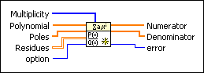
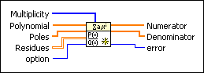
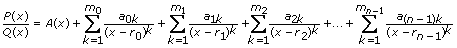
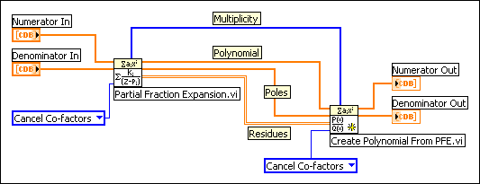

Create Polynomial From PFE VI
Owning Palette: Polynomial VIs
Requires: Full Development System
Uses partial fraction expansion to reconstruct a rational polynomial.

 Add to the block diagram Add to the block diagram |
 Find on the palette Find on the palette |
Owning Palette: Polynomial VIs
Requires: Full Development System
Uses partial fraction expansion to reconstruct a rational polynomial.

| Add to the block diagram |
Find on the palette |
 |
Multiplicity specifies the number of times each root in Poles occurs. Use the Partial Fraction Expansion VI to obtain the Multiplicity. If Multiplicity is empty, the VI calculates the number of nonzero elements in each row of Residues and regards that number as the multiplicity of the corresponding pole. | ||||
 |
Polynomial contains the coefficients for the quotient polynomial in ascending order of power. Use the Partial Fraction Expansion VI to obtain the Polynomial. | ||||
|
Poles contains the unique roots of Denominator. Use the Partial Fraction Expansion VI to obtain the Poles. | ||||
 |
Residues contains the numerators of the partial fractions that result for each pole. Use the Partial Fraction Expansion VI to obtain the Residues. | ||||
 |
option specifies how the VI handles the co-factors of Numerator and Denominator. If option is Cancel Co-factors, this VI performs polynomial GCD of Numerator and Denominator first. If option is Reserve Co-factors, this VI keeps Denominator unchanged.
|
||||
 |
Numerator returns the rational polynomial coefficients, in ascending order of power, for the numerator polynomial. | ||||
|
Denominator returns the rational polynomial coefficients, in ascending order of power, for the denominator polynomial. | ||||
 |
error returns any error or warning from the VI. You can wire error to the Error Cluster From Error Code VI to convert the error code or warning into an error cluster. |
The VI uses the following equation to reconstruct the rational polynomial:

where P(x) is Numerator, Q(x) is Denominator, A(x) is Polynomial, n is the number of elements in Poles, ri is the ith element in Poles, mi is the ith element in Multiplicity, and aik is the (i, k)th element in Residues.
The following block diagram shows how to use the Create Polynomial From PFE VI to reconstruct a rational polynomial from the Partial Fraction Expansion VI.
